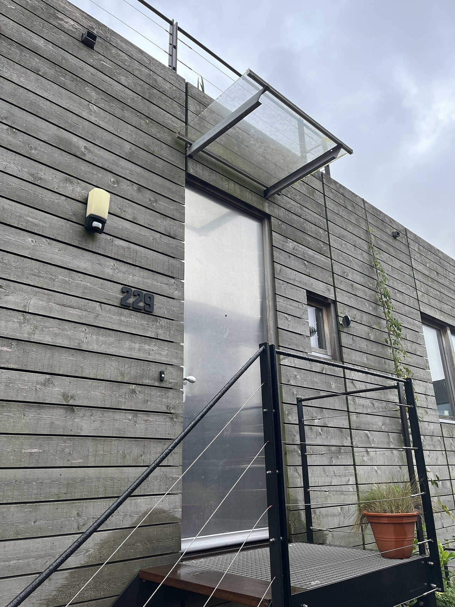
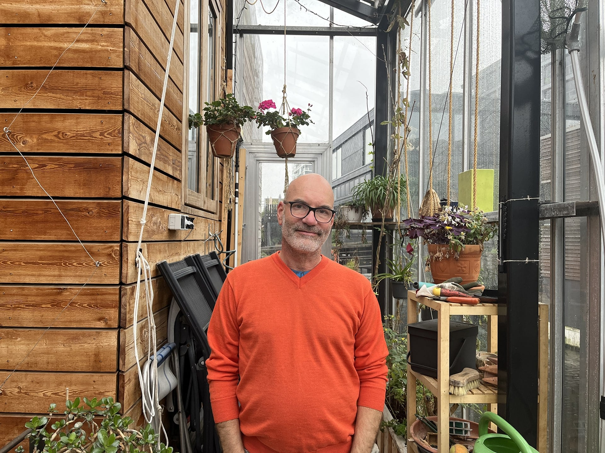
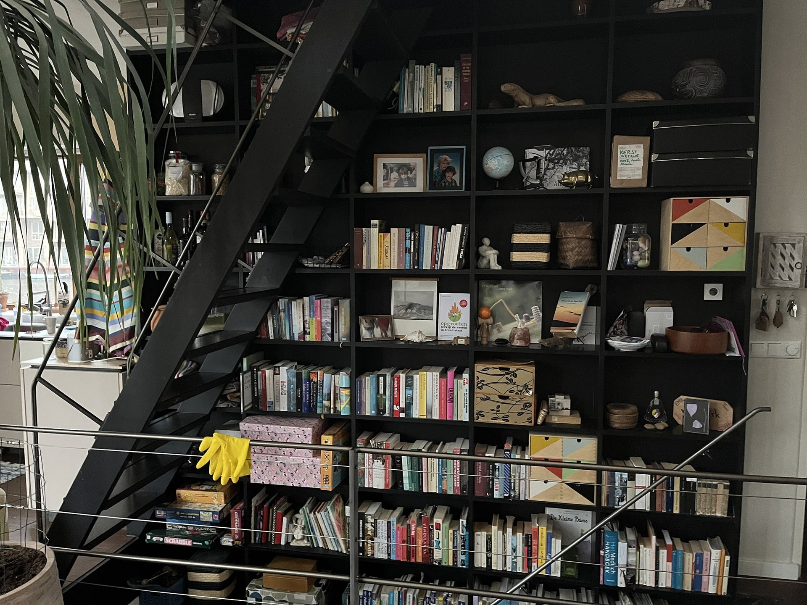
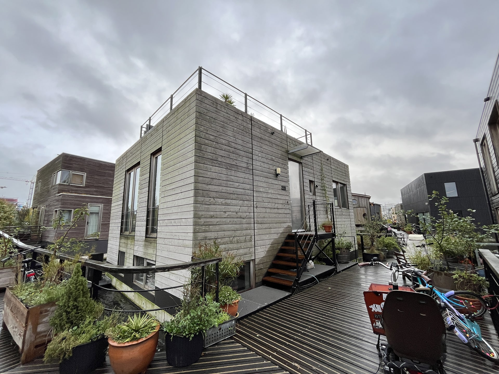
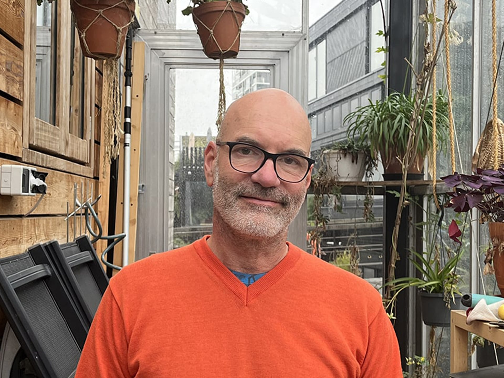

Markus Schmid aan het woord



Eén van de 144 bewoners op Schoonschip
"Inmiddels woon ik samen met mijn vrouw en kinderen al 5 jaar, als één van de eerste bewoners hier op Schoonschip. Wij waren ook betrokken bij de bouw en zagen alles tot één komen." Markus is door een vriend hier gekomen, die ook op Schoonschip woont. Markus en zijn familie werden erg getriggerd dat hier een duurzaam expiriment plaats zou vinden.
"Een droom met vergaande duurzame doelstellingen."

- Markus Schmid, Beleidsadviseur duurzaamheid van Gemeente Diemen